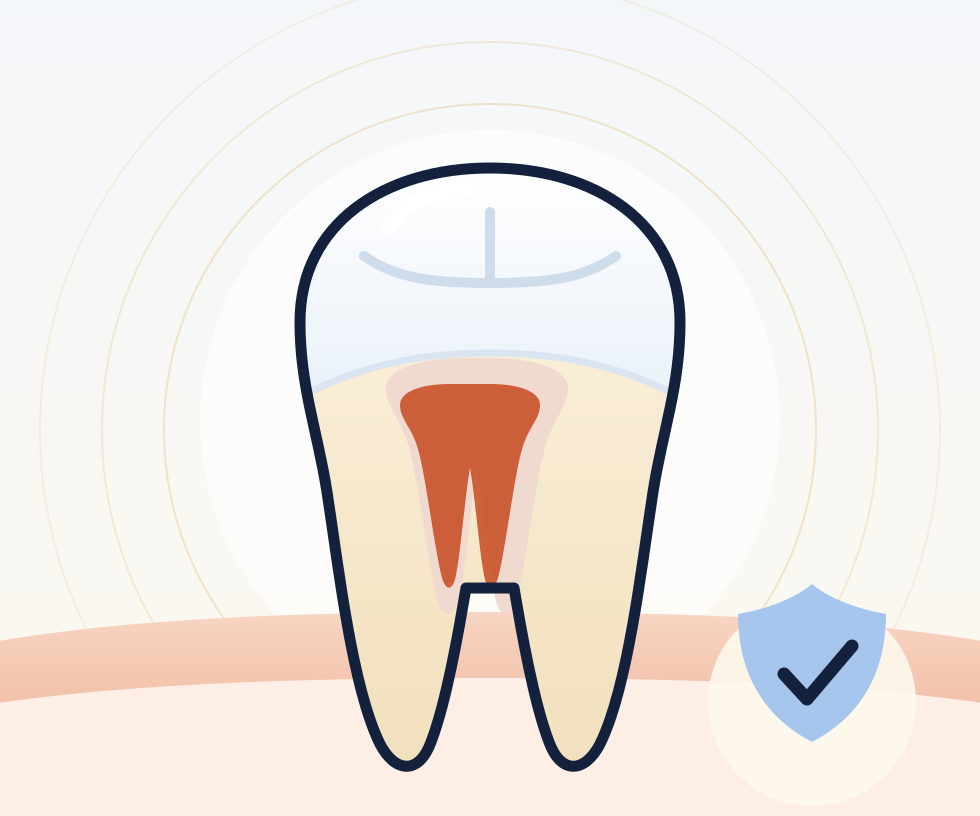

Persistent tooth pain
Especially pain that lingers after hot or cold food.
Endodontic treatment
Gentle, thorough care to relieve pain and save a damaged or infected tooth, so you keep your natural smile.

A calmer approach
When decay or injury reaches the soft pulp inside a tooth, it can become infected and painful. Root canal treatment removes the infected pulp, cleans and shapes the inner canal, and seals it to stop infection returning, saving the tooth rather than removing it.
We know root canal treatment has a reputation, so we take extra care with anaesthetic and pacing, especially for anxious patients. Most people are surprised at how comfortable the appointment is compared to what they expected.
Signs to look out for
Especially pain that lingers after hot or cold food.
Gums that are swollen, sore, or tender to touch nearby.
A tooth that looks darker than those beside it.
A far better outcome long-term than extraction.
The appointment
The area is fully numbed and we take an X-ray to see the canal shape.
The infected pulp is removed and the canal is cleaned and shaped.
The canal is sealed and the tooth restored, often with a crown for lasting strength.
In pain or worried?
Call us or send a message and we’ll find a time that works.